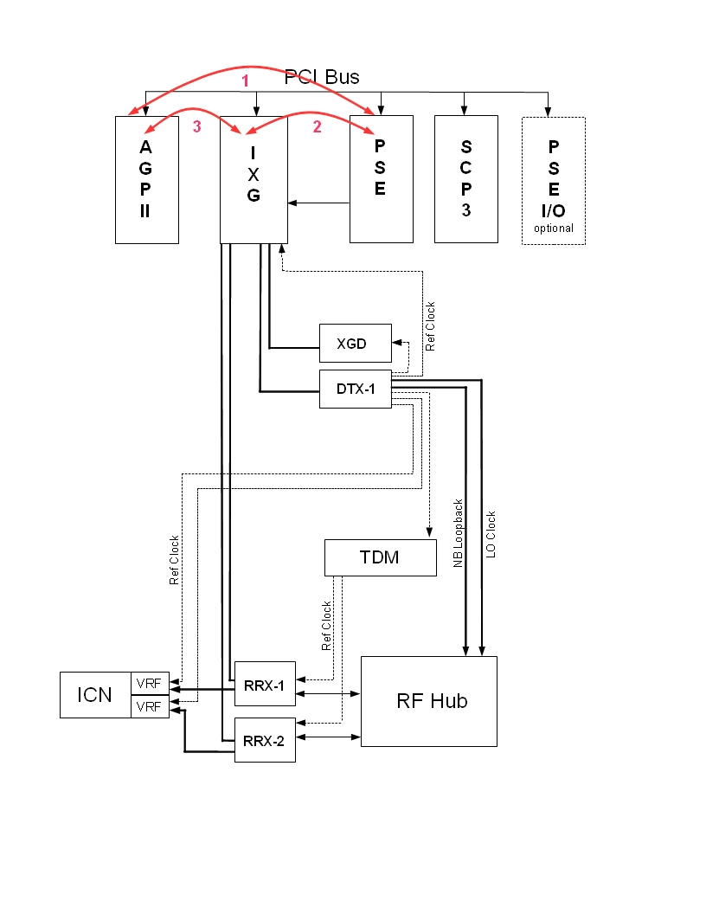

PSE to IXG Datapath Diagnostic
1 Disclaimer
Depending on your service agreement, not all service tools, diagnostics, and utilities referenced in this document may be accessible. Contact your sales person for information on available service license packages.
2 Diagnostic Description
2.1 Diagnostic Path
Diagnostics > System Function > Acquisition/Pulse Generation > Data Acquisition
Diagnostics > Hardware Location > System Cabinet > CAM > Data Acquisition
Figure 1. PSE to IXG DP

2.2 Purpose
This diagnostic tests the datapath between the PSE and the IXG boards.
2.3 Components Tested
-
AGP
-
IXG
-
PSE
2.4 Requirements
AGP, IXG, and PSE boards in the chassis
2.5 Block Diagram
If the system has the MNS option installed, the PCI bus may include an ERF board. In this configuration, RRX-1 and RRX-2 connect through the ERF board instead of the IXG board. The data acquisition for this diagnostic test performs the same for all configurations.
Figure 2. PSE to IXG Block Diagram (without MNS Option)

2.6 Test Sequence
-
Click Calculate Time to get an estimate of the time it will take to run the selected diagnostics.
Other than Test Iterations, do not change the Test Options settings from their default settings unless instructed to do so by a GE Healthcare engineer. There are very few circumstances when these settings need to be changed.
-
Click Run.
The test executes in these steps:
-
The AGP configures the PSE to play out a PSD with a test data pattern.
-
The PSE sends the test data out on to the sequence bus.
-
The IXG captures the data and stores it in a bypass FIFO queue.
-
The AGP reads the data in the FIFO queue and compares it to the original data.
-
2.7 Expected Results
- Test Results
-
Diagnostic results display the test name with a status of PASS or FAIL. If you receive a FAIL status, click the error number in the 1st Error column to view error message details.
- Test Status
-
This window informs you of the progress of the test from the initial scan to the completed diagnostic.
2.8 Finalization
Before scanning, perform a TPS reset.